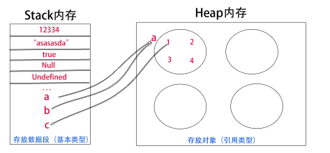

基本数据类型：number, string, boolean, undefined, null
存储在栈（stack）中的简单数据段，也就是说，它们的值直接存储在变量访问的位置。 这是因为这些原始类型占据的空间是固定的，所以可将他们存储在较小的内存区域 – 栈中。 这样存储便于迅速查寻变量的值。
属性无法更改,无法添加和移除属性。
> var str = 'abc';
> str.foo = 3;
> str.foo // undefined
//获取未知属性总返回undefined
引用数据类型：function, object, array
存储在堆（heap）中的对象，也就是说，存储在变量处的值是一个指针（point）， 指向存储对象的内存地址。这是因为：引用值的大小会改变，所以不能把它放在栈中， 否则会降低变量查寻的速度。相反，放在变量的栈空间中的值是该对象存储在堆中的地址。 地址的大小是固定的，所以把它存储在栈中对变量性能无任何负面影响。
Null值表示一个空对象指针，所以用typeof检测类型返回为object。
声明了变量后，却未初始化，该变量值就为undefined。
console.log(null == undefined) // true
console.log(null === undefined) // false
//实际上，undefined值派生自null值，所以ECMAScript规定对于他们的相等性测试要返回true.
==:
String == Boolean，需要两个操作数同时转为Number
String/Boolean == Number，需要String/Boolean转为Number
object == object, 则比较它们是不是同一个对象
object == String/Number/Boolean，需要先调用valueof返回原始值，再转为Number
===:
只比较，不转换类型
一般不需要显示声明值为undefined，而且undefined值不允许更改。 只要意在保存对象的变量还没有真正保存对象，就应该明确让其保存null值。
布尔类型原始值包括true、false。
强制转换boolean类型：Boolean()。转换规则如下：
数据类型 转换为true的值 转换为false的值
Boolean true false
String 任何非空字符串 ""
Number 任何非零数字值(包括无穷大) 0/NaN
Object 任何对象 null
Undefined 不适用 undefined
下面的操作符产生布尔值：
!、&&、||
!:
//无论该数是什么类型，都返回布尔类型
console.log(![]); //false
console.log(!""); //true
console.log(!null); //true
console.log(!undefined); //true
console.log(!NaN); //true
console.log(!{}); //false
console.log(!0); //true
&& 和 ||: (规则和!一样)
//特殊用法
var a = [] && {}; //{}
var a = [] || {}; //[]
JavaScript 内部，所有数字都是以64位浮点数形式储存，即使整数也是如此。 所以，1与1.0是相同的，是同一个数。 由于浮点数不是精确的值，所以涉及小数的比较和运算要特别小心。 在JavaScript内部，实际上存在2个0：一个是+0，一个是-0。它们是等价的。
var a = 55;
var b = 012; //10
var c = 0x67; //103
//进行数学计算时，八进制、十六进制都会转为十进制
表示一个本该返回数值的操作数却未返回数值。NaN有以下特点:
console.log(NaN/10); //NaN
console.log(NaN == NaN); //false
console.log(isNaN(NaN)); //true
console.log(isNaN("10")); //false
console.log(isNaN(10)); //false
console.log(isNaN("1bl")); //true
console.log(isNaN(true)); //false
console.log(isNaN(undefined)); //true
console.log(isNaN(null)); //false
对象调用isNaN()函数时，会先调用对象的valueOf()方法，看是否能转为数值，如果不能则 再调用toString()方法。
有三个函数可以转换：Number(), parseInt(), parseFloat()
Number: （+操作符一样）
数据类型 被转换值 转换值
Boolean true 1
String "" 0
Number 任何值 不变
Object 任何对象 NaN
Null null 0
Undefined undefined NaN
//String类型若为纯数字，则转换为对应格式;否则转换为NaN
parseInt:
//规则相对简单，会去找第一个非空格字符，若第一个字符不是数值或负号则返回NaN
console.log(parseInt("")); //NaN
console.log(parseInt("12blue")); //12
console.log(parseInt("22.5")); //22
console.log(parseInt(null)); //NaN
parseFloat:
//规则与parseInt类似，除了parseFloat会忽略前导的0
console.log(parseFloat("0xa")); //0
console.log(parseFloat("0aa")); //0
console.log(parseFloat("012aa")); //12
console.log(parseFloat("090")); //90
对象调用Number()函数时，会先调用对象的valueOf()方法，看是否能转为数值，如果不能则 再调用toString()方法。
字符串就是零个或多个排在一起的字符，放在单引号或双引号之中。单引号字符串的内部， 可以使用双引号。双引号字符串的内部，可以使用单引号。如果要在单引号字符串的内部，使用单引号 （或者在双引号字符串的内部，使用双引号），就必须在内部的单引号（或者双引号）前面加上反斜杠，用来转义。
\0 null（\u0000）
\b 后退键（\u0008）
\f 换页符（\u000C）
\n 换行符（\u000A）
\r 回车键（\u000D）
\t 制表符（\u0009）
\v 垂直制表符（\u000B）
\' 单引号（\u0027）
\" 双引号（\u0022）
\ 反斜杠（\u005C）
字符串类型的值一旦创建，便不能销毁。字符串可以被视为字符数组，因此可以使用数组的方括号运算符， 用来返回某个位置的字符（位置编号从0开始）。但是仅此而已，不可改变。
var s = 'hello';
s[0] // "h"
s[1] // "e"
s[4] // "o"
// 直接对字符串使用方括号运算符
'hello'[1] // "e"
toString:
//此方法相对使用较多
null和undefined无此方法。
var a = [];
console.log(a.toString()); //""
var b = 5;
console.log(b.toString()); //"5"
String:
console.log(String(10)); //"10"
console.log(String([])); //""
console.log(String(null)); //"null"
console.log(String(undefined)); //"undefined"
对象调用String()函数时，会先调用对象的toString()方法，看是否能转为字符类型，如果不能则 再调用valueOf()方法。
字符串有许多有用的方法。例如：
> 'abc'.slice(1) // 复制子字符串
'bc'
> 'abc'.slice(1, 2)
'b'
> '\t xyz '.trim() // 移除空白字符
'xyz'
> 'aabb'.toUpperCase()
'AABB'
> 'abc'.indexOf('b') // 查找字符串
1
> 'abc'.indexOf('x')
-1
typeof运算符可以返回六种数据类型: number、string、boolean、undefined、function、object
typeof [] // "object"
typeof null // "object"